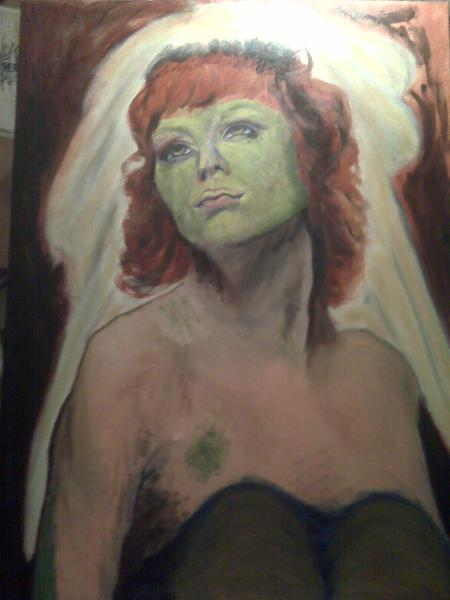

Yvette's ~*
Established
1980
1980
| Yvette's has a Passion for Fashion !! ~* |
| Witnessing the romantic, nuptial love exchanged by the two gentle proprietors of Shell House set Shelley adrift in a reverie of sentimentality. She began to think of a letter from her dear cousin Esmeralda which she hadn't yet read. Cousin Esmeralda's family had ridden the wave of immigration to the New World where they had settled on the Gulf Coast of Florida. Esmeralda's letters talked of long~leaf pine, jumbo shrimp, oranges and someone named Harriet Beecher Stowe who was writing pamphlets advertising the beauty of Florida encouraging others to visit and live in what was being hailed the Sunshine State. Then Shelley's mind wandered into the lyrics of an old Irish ballad. The rhymes and the melody came in pieces and reminded her of Sean Quinn. ~~Oh, Sean the plough~boy, he is a dashing blade, He goes whistling and singing over yonder green glade, He met with pretty Susan, she's handsome I declare She is far more enticing than the birds in the air~~ The Lark in the Morning, that was the name of that sweet old tune. Shelley would admit to no one that she ever thought of romance. Her age made the question inevitable from the standpoint of traditional society, but whenever anyone mentioned romance or love or marriage to Shelley she always managed to dodge the issue. Long years of practise had yielded an expertise in the politic of out maneuvering ones peers. Shelley's personal tactic for avoiding the subject was to keep her mind firmly on her work. A wedding day like today made it difficult, however, to totally block out any notion of sharing her life intimately with another. Spring, Summer, Fall and Winter came and went but still there was no golden wedding band on Shelley's finger. Not even an engagement ring did she bear. There was still plenty of time for that. There would always be plenty of time for romance followed by marriage and children, a family of her own. At least that's what she usually told herself. It was easy for Shelley to float along through life in this mild manner. She was a dreamer by nature and she wiled away the hours of her life in fantasy. Making entries into her diary and composing poems and novels which she hoped someday to get published. The Friendly Flower Shoppe was a perpetual source of inspiration for beautiful writing. Roses, tulips and daisies were the ladies in waiting for the Red Valerian which flourished as a theme for the town which bore its name. How effortlessly she meandered through life with her lovely surroundings and her solitary passions. Yes, Shelley was comfortably shielded from pressing issues such as garnering a reputation as an old maid. Besides, there was so much more to life than romance. Women were enjoying the independence and emancipation of the Victorian World with broader and brighter vistas dawning on the socioeconomic horizons each new day. Not a moment passed in which another feminine maverick of the Age didn't accomplish some new feat of individuality and self reliance heretofore unknown to the fairer sex. Why, that very descriptive itself had become a sort of unwarranted stereotype from which women of the present day were at liberty to distance themselves. Shelley wasn't a feminist, however. She didn't protest the life choices of others and she willingly reaped the benefit from anything new and exciting, but a club joiner she was not. She never adopted any particular genre for herself. Never did Shelley attempt to pigeon hole or categorize her life. She was content to allow others the personal freedom which she thought was their right and certainly she exercised her own with a cunning instinct which had earned her the respect of her peers. Peers. What a silly concept for such a small land as Valeria. The townsfolk were in actuality her extended family. If anyone became too serious about anything other than caring for each other in Valeria there would have been an eclipse or some monumental act of Nature to commemorate the event. One sure thing about Valerians, they looked out for one another and shared their genteelness with the rest of the country and the world. To a person from Valeria, life was for sharing and caring. Perhaps this defining characteristic of her dainty home township was also a determining factor in Shelley's continuing maidenhood. What use had she for a husband when everyone in Valeria was her family? |
| The next scenes of the Last Rains of Summer shall be published, however, it may be some time as I am currently passionately pouring forth page after page of Scribbner's Ghost !! ~* I shall indeed complete the Last Rains of Summer for you !! ~*~*~*~*~*~*~*~*~*~*~*~*~*~*~*~*~*~*~*~* Thank you for reading the Last Rains of Summer ~*~*~*~*~*~*~*~*~*~*~*~*~*~*~*~*~*~*~*~*~*~*~*~* |
Yvette's ~*
Thank you for visiting
| Yvette's treasures the opportunity to serve you ~* |



 |
 |
 |
 |
 |
 |
| Yvette's cares about YOU !! ~*~*~*~*~* Yvette's wants YOU to be HAPPY !! ~* |